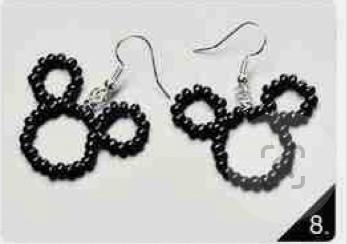
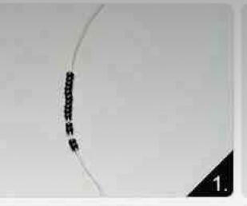
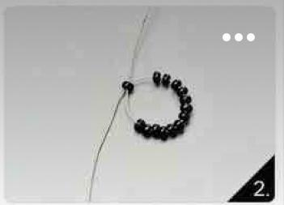
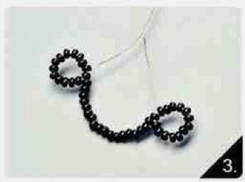
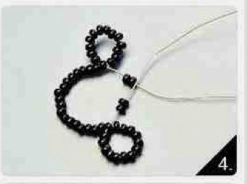
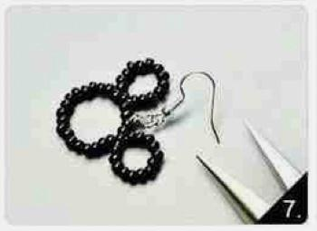

Другие украшение из бисера |
Как сделать серёжки миккимаус из бисера? Шаг 1 Наденьте на леску 14 бусин любого цвета. Шаг 2 Проведите второй конец лески через последнию бусинку и затените. Шаг 3 Наденьте 28 бусин на правый конец лески, затем от начала отсчитайте 15 бусин и в 15 проденьте тем же правым концом лески куда вы и надевали 28 бусин. Шаг 4 Сделайте всё как показано на картинке. Шаг 5 Привяжите специальный крючок для серёжек и всё готово! |